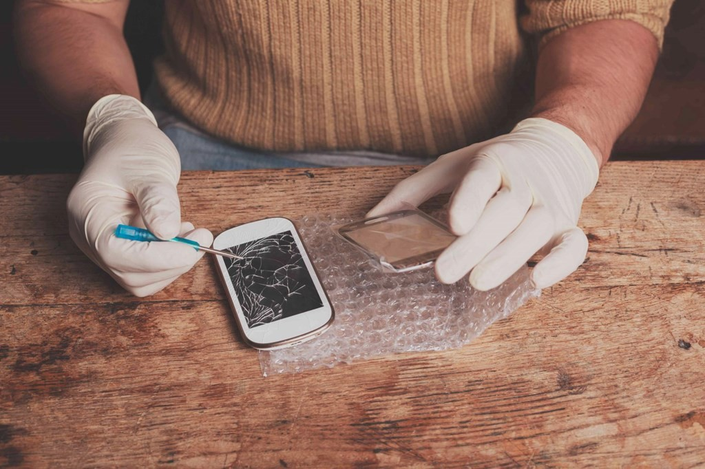

Hardware
Important Tips For Cell Phone Repair Technicians

I am sharing a few tips with all professional cell phone repair technicians which will surely be helpful when undertaking repair jobs. For those who are ignorant about this, this is a new lesson to learn and for those who already know this, this is mere revision for them!
It is always important to follow the rules and ethics in whichever profession you are. This is to ensure safety as well as professionalism that results in customer satisfaction.
1. You should have all the necessary tools
A good workstation is one which possesses all the necessary set of tools. Since cell phone repair is a vast arena, many specialized tools are needed in addition to the common tools.
So a professional technician should always have such specialized tools and equipments to carry out specific repair tasks/procedures. A workstation with well stocked tools is bound to motivate its occupying technician.
2. While Dismantling
You should always remember the manner in which you had dismantled the phone because when you start reassembling the same, you will have to go exactly in the reverse manner or else you will miss something and unnecessarily waste your precious time.
Earlier it was sort of difficult as we had all types of handsets such as flippers and sliders. But nowadays, handsets are very much a piece of cake for disassembling and reassembling.
Also while disassembling and assembling, you should be extra careful about the LCD as it is the most delicate part (and the most expensive part!) in a cell phone.
You can learn all the skills needed to repair iPhones and other smartphones by enrolling into Prizm Institute’s cell phone repair training course as well. The training starts from basics and goes up to troubleshooting of various faults.
3. Replacing all the screws back
Whenever you replace the screws after fixing the phone, make sure that you replace all the screws in their respective slots. If per chance due to your carelessness you may have misplaced some screws make sure you use screws of same type, size and shape or else you will surely damage the threads in the slots or the slot itself.
And remember that handsets with missing screws are not a good sight and also it unbalances the alignment of the handset.
You should also read safety measures to be followed by cell phone repair technicians.
4. Always keep the work area neat and clean
It is utmost necessary that you keep your workplace neat and clean because a dirty and unorganized workplace reflects on the character and manners of the person and a clean ambience always attracts people.
A clean workstation will always give better results. If you wish to increase your output, then make sure you keep your workplace very much neat and clean.
5. All the spares should be available
When you take a job to fix a phone make sure that you have all the proper parts to replace. It would be an advantage if you keep the spare parts of the most common models in stock so that when the handsets come for repairs, you can repair them immediately without wasting any time. Always find ways to save your time to become successful in this highly competitive world.
You can also read our 10 killer tips to be successful in cell phone repair business to grow your business more.
6. Keep the SIM card and memory card of the customer safely
When you accept any handset for repairs from a customer, always make it a point to keep the SIM and memory card safely. It would be better if you do this in an organized manner such as keep it in a separate small box with the customer’s name and or model of the handset or the number of the receipt which you may have issued to the customer. This will make it easy for you when the customer asks it to be returned. You will not have to rummage through your drawer wasting your time in looking for it.
7. Ensure that the data of the customer is secure
When you repair a phone, make sure that you do not delete the data unless required. Because in some cases, the data is much more important than the handset itself. If it absolutely necessary, take a backup of the data and it is utmost necessary to take the customer’s consent before deleting data or performing a factory reset. All tips related to data are taught in Prizm Institute’s mobile software repairing course.
8. Take assistance from your friend (internet!)
The internet today has deep treasures of knowledge. If you are confused while fixing a fault, try to seek solutions for it through internet.
In many cases, there is an easy solution for a particular fault in a particular model which you might be unaware of. And there is possibility of you being surprised when you are able to fix the problem through such simple steps you found while surfing.
While searching for solutions in Google, make sure you do all the 3 searches – text, image and video search until you get a proper solution.
You should also consider reading these misconceptions about cell phone repair.
Following these tips diligently will make you people’s favorite technician. You will also win the customer and his confidence. It will also help you in increasing your clientele and hence bring in more business as well as more money.
Please let us know if you have an important tip to share in the comments below. Please share this post on facebook and twitter.
Home Page